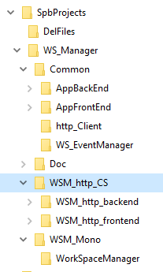
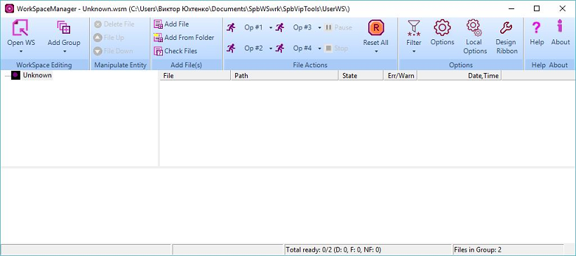
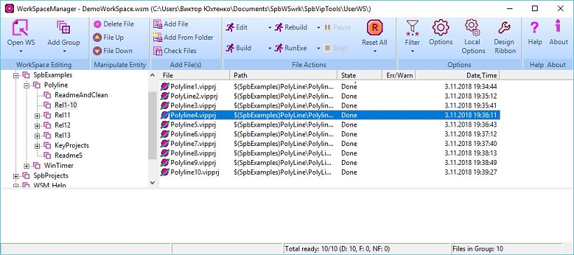

Copyright (c) Prolog Development Center SPb
WorkSpace Manager
Version 2.0
Автор: Виктор Юхтенко
Построение и запуск WokSpaceManager
Приложение
WorkSpaceManager предназначено для организации рабочей среды,
включающей множество проектов и сопутствующих файлов различного
типа.
Приложение
написано на языке системы Visual Prolog (последние изменения и построения выполнялись в версии 9xxx).
Приложение распространяется под лицензией GNU GPL v.3, то есть без ограничений на применение.
Исходные коды приложения являются составной частью массива исходных кодов SpbRsolutions.
Для компиляции и
построения проекта требуется коммерческая системы Visual Prolog (9xxx).
Для построения исполняемых приложений требуются классы из набора инструментария SpbVipTools.
Расположение исполняемых приложений
Исходные
коды позволяют построить два типа приложения, работающие в среде MS
Windows (работа проверена в среде Windows 10):
- Moнo-приложение: WorkSpaceManager.exe
- Приложение, состоящее из двух исполняемых частей - http-клиента и http-сервера:
- WSM_http_backend.exe
- WSM_http_frontend.exe
Все
эти приложения включены в состав SpbRsolutions, позволяют
использовать их без компиляции проектов и располагаются в директории.
SpbRsolutions\SpbVipTools\Bin
Вместе с этими исполняемыми приложениями располагаются все файлы: необходимые для их запуска.
Приложение WorkSpaceManager.exe можно запустить обычным способом.
Перед запуском приложения WSMfrontend.exe должно быть запущено приложениен WSMbackend.exe (от имени администратора).
Начало работы с программой WorkSpaceManager (моно или в паре клиент-сервер) см. ниже
Расположение исходного кода проектов
Исходные коды располагаются в директории SpbProjects, как показано на рисунке:

Моно-проектом является WorkSpaceManager.vipprj в директории SpbRsolutions\SpbProjects\WS_Manager\WSM_Mono.
Проектом http-Сервера является WSMbackend.vipprj в директории
SpbRsolutions\SpbProjects\WS_Manager\WSM_http_CS\WSM_http_backend.
Проектом http-Клиента является WSMfrontend.vipprj в директории
SpbRsolutions\SpbProjects\WS_Manager\WSM_http_CS\WSM_http_frontend.
Построение приложения WorkSpaceManager.exe
1. Запустите IDE системы Visual Prolog.
2. Вызовите открытие проекта (Project\Open)
SpbRsolutions\SpbProjects\WS_Manager\WSM_Mono\WorkSpaceManager.vipprj
3. При первом открытии проекта IDE сообщит о том, что не определены IDE-переменные (variables)
SpbProjects
SpbVipTools
и предложит их последовательно определить (порядок не существенен).
4. Установить маршруты для IDE-переменных:
SpbProjects на директорию ...SpbRsolutions\SpbProjects
SpbVipTools на директорию ...SpbRsolutions\SpbVipTools
5. Запустите построение проекта через меню Build\Build All или Rebuild\Rebuild All
6. По завершении построения проекта вызовите через меню Build\Execute (или иконка E).
Дальнейшие действия см. ниже.Построение приложения WSMbackend.exe
1. Запустите IDE системы Visual Prolog.
2. Откройте проект (Project\Open)
SpbRsolutions\SpbProjects\WS_Manager\WSM_http_CS\WSM_http_backend\WSMbackend.vipprj
3. Если IDE-переменные
SpbProjects
SpbVipTools
не были ранее определены, то определите их, установив
SpbProjects на директорию ...SpbRsolutions\SpbProjects
SpbVipTools на директорию ...SpbRsolutions\SpbVipTools
4. Запустите построение проекта через меню Build\Build или Build\Rebuild All
5. По завершении построения проекта вызовите через меню Build\Execute (или иконка E).
На экране появится окно, показывающее старт сервера, назначенного на порт http://localhost:5558.
Построение приложения WSMfrontend.exe
1. Запустите IDE системы Visual Prolog.
2. Вызовите открытие проекта (Project\Open)
SpbRsolutions\SpbProjects\WS_Manager\WSM_http_CS\WSM_http_frontend\WSMfrontend.vipprj
3. Если IDE-переменные
SpbProjects
SpbVipTools
не были ранее определены, то определите их, установив
SpbProjects на директорию ...SpbRsolutions\SpbProjects
SpbVipTools на директорию ...SpbRsolutions\SpbVipTools
4. Запустите построение проекта через меню Build\Build или Build\Rebuild All
5. Если приложение WSMbackend.exe ранее не было запущено, то запустите его
6. Если приложение WSMbackend.exe было запущено, то
по завершении построения проекта вызовите через меню Build\Execute (или иконка E).
Дальнейшие действия см. ниже.
Пробный запуск приложения WorkSpaceManager.exe или WSMfrontend.exe
При первом запуске рабочее пространство выглядит так

Панель управления приложения может быть настроена по желанию пользователя вызовом редактора с помощью иконки Design Ribbon.
Сгружаемый набор SpbRsolutions содержит пример рабочего пространства, расположенный в директории
SpbRsolutions\UserWS в файле DemoWorkSpace.wsm.
Откройте файл рабочего пространства SpbRsolutions\UserWS\DemoWorkSpace.wsm, нажав иконку Open WS.
Этот пример рабочего пространства содержит все проекты набора SpbRsolutions и вспомогательные файлы, как показано на рисунке.

При этом установки рабочего пространства, хранящиеся в файле OptionsWSM.xml предполагают определение
WSM-переменных, показанных на рисунке ниже

Более
яркими иконками отмечены wsm-переменные, определенные как IDE-variables
в системе Visual Prolog, и только там их можно редактировать:
SpbVipTools - ...SpbRsolutions\SpbVipTools
SpbExamples - ...SpbRsolutions\SpbExamples
SpbProjects - ...SpbRsolutions\SpbProjects
Переменная VipDir - ссылается на расположение системы Visual Prolog. Приложение WSM Manager ничего не знает о системе Visual Prolog и определение переменной VipDir - единственный способ сообщите ей об этом.
Остальные установки можно посмотреть в форме настроек, нажав соответствующую иконку на панели.
Для пробного запуска обработки файлов
- Настройте размер поля сообщений (если его не видно, увеличьте размер окна)
- Выберите один из узлов, содержащих проекты Visual Prolog,
- Нажмите иконку Build (Build All вызовет компиляцию и построение всех проектов выбранного узла).
- Двойной клик на проекте вызовет выбранный проект на редактирование
Для использования остальных свойств приложения смотрите Help.